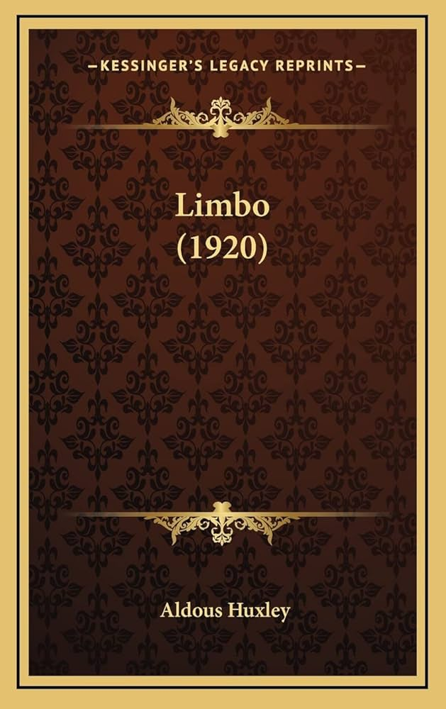
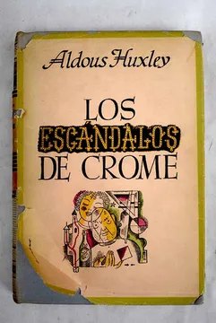
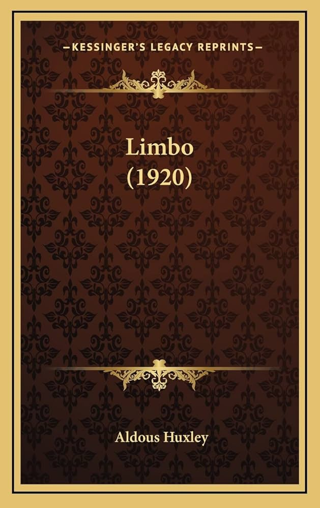
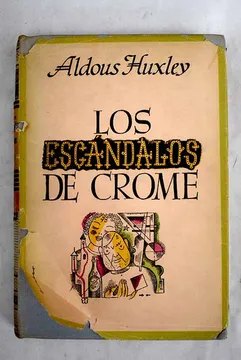

Aldous Huxley
Novelista y ensayista inglés de prosa enciclopédica y a la vez visionaria. En su juventud quedó prácticamente ciego, y en 1942 publicó El arte de ver, acerca de sus esfuerzos por recuperar la visión. Se graduó en literatura inglesa en el Balliol College de Oxford (1913-1915) y trabajó para la revista Athenaeum y como crítico teatral en la Westminster Gazette.

 


